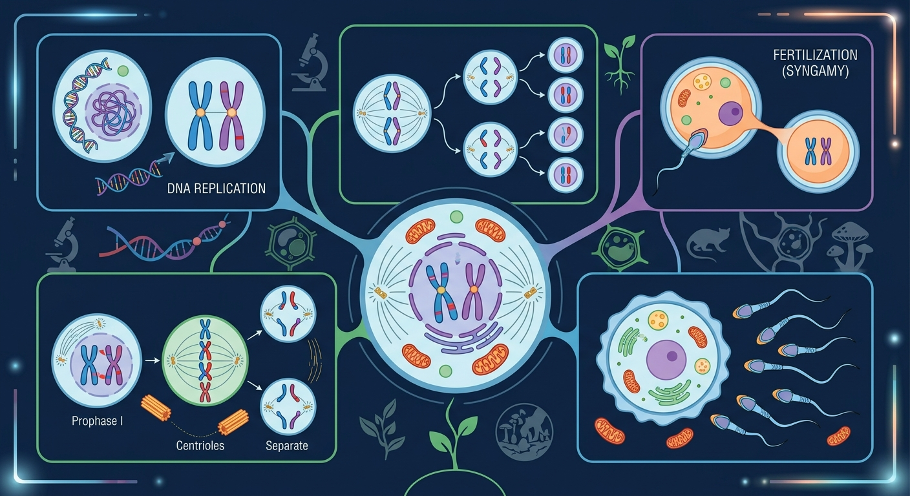
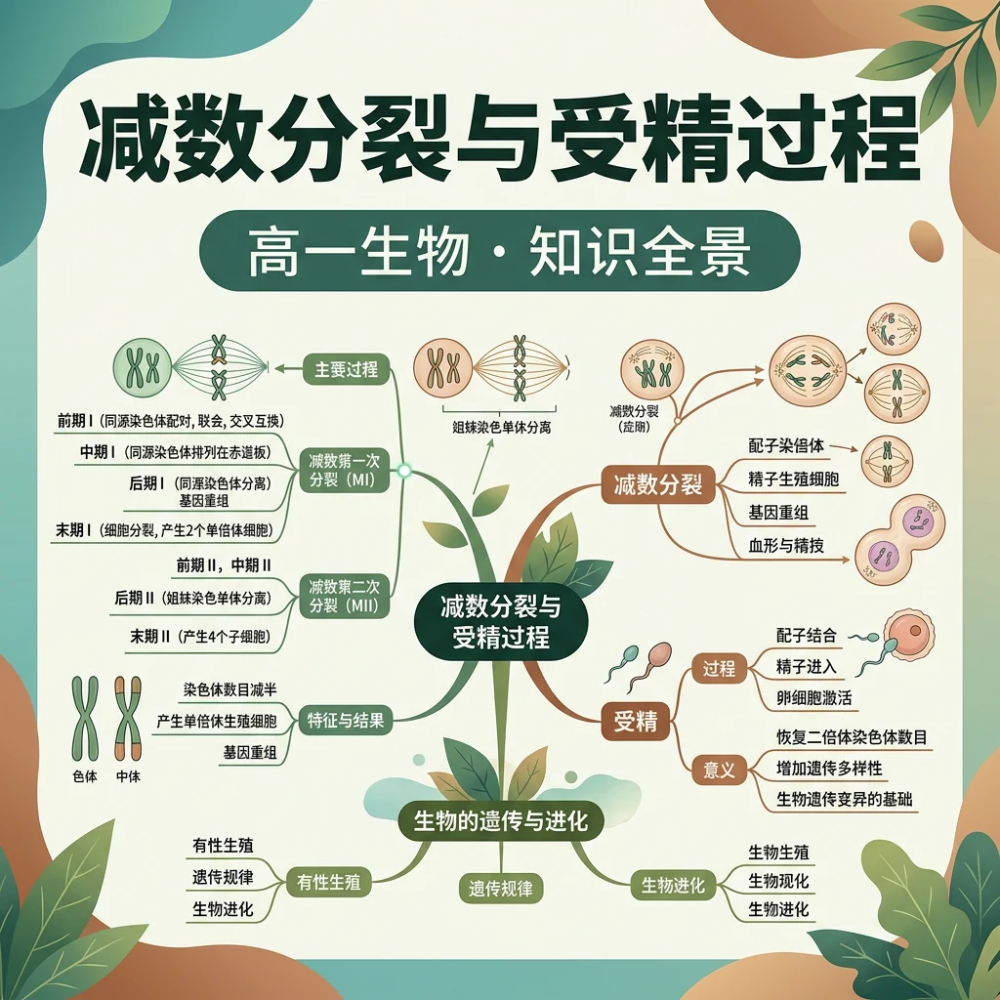

一次复制、两次分裂——染色体数目减半的生命魔术

❓ 为啥精子和卵子染色体要减半？不然会怎样？
❓ 减数分裂两次分裂有啥区别？为啥不一次搞定？
❓ 受精后染色体数怎么又恢复正常了？
学完这一课，这些问题你都能自信地回答。
有丝分裂能让细胞数目增多，人的体细胞有 46 条染色体（2n=46），DNA 复制后每条染色体含两条姐妹染色单体。
如果精子和卵细胞也各有 46 条染色体，受精后岂不是变成 92 条？一代代叠加下去，染色体数岂不是要"爆炸"？而且——为什么同一对父母的孩子长得都不一样？
一种精妙的分裂方式——减数分裂：让生殖细胞染色体数目减半（2n→n），受精后恰好恢复；同时通过交叉互换和自由组合制造遗传多样性。这就是生命延续的"数字魔术"。
3 道小题，帮你确认是否准备好了。答完会给出个性化学习建议。
有丝分裂的结果是什么？
"一条染色体经过复制后由两条姐妹染色单体通过着丝粒相连"——这句话正确吗？
人的体细胞有 46 条染色体，其中同源染色体有多少对？
定义：减数分裂是进行有性生殖的生物，在产生成熟生殖细胞（配子）时进行的染色体数目减半的细胞分裂。
核心特征：
1. 维持染色体数目恒定：如果没有减数分裂，受精后染色体数目会世代加倍
2. 产生遗传多样性：通过交叉互换和自由组合，产生基因组合多样的配子
3. 为自然选择提供原材料：遗传多样性是生物进化的基础
DNA 复制后每条染色体由两条姐妹染色单体组成。第一次分裂把同源染色体（一对）拆开，各去一边——染色体数减半。第二次分裂把姐妹染色单体拆开——数目不再变。所以关键在第一次分裂的"同源分离"。
设计实验验证花粉母细胞减数分裂异常与果实性状变异的关系

| 时期 | 主要特征 | 染色体行为 | 关键事件 |
|---|---|---|---|
| 前期Ⅰ | 染色质凝缩，核膜消失 | 同源染色体联会→四分体 | 联会、交叉互换 |
| 中期Ⅰ | 纺锤丝牵引 | 四分体排列在赤道板两侧 | 同源染色体随机排列 |
| 后期Ⅰ | 同源染色体分离 | 移向细胞两极 | 同源染色体分离 |
| 末期Ⅰ | 细胞质分裂 | 染色体数目减半 | 形成两个次级性母细胞(n) |
联会：同源染色体两两配对。联会后每对含 4 条染色单体，称为四分体。
交叉互换：非姐妹染色单体交换部分片段→基因重组。
公式：四分体数 = 同源染色体对数 = n。如 2n=4 → 2 个四分体 → 8 条染色单体。
联会让同源染色体"手拉手"，这才使得后期Ⅰ能精准地把同源对拆开各半。有丝分裂没有联会，所以不会减半。联会还创造了交叉互换的机会——这是基因重组的物质基础，也是你和兄弟姐妹长得不一样的原因之一。
同桌讨论 30 秒：减数第二次分裂会使染色体数目减半吗？
A. 会，减Ⅱ结束染色体数只有原来的一半 ｜ B. 不会，减半发生在减Ⅰ
染色体数目减半发生在减Ⅰ后期同源染色体分离时——一对同源染色体拆开各去一个子细胞，2n→n 在此时已经完成。
减Ⅱ只是把姐妹染色单体分开（类似有丝分裂），分开前后每个细胞里的染色体数目并没有减半（后期虽暂时加倍，但最终每个子细胞仍是 n）。
💡 记忆锚点：减半看"同源分离"（减Ⅰ），单体分开看"着丝粒"（减Ⅱ）。这是本课最容易丢分的概念点。
| 时期 | 主要事件 | 关键区别 |
|---|---|---|
| 前期Ⅱ | 染色体凝缩，纺锤体形成 | 无 DNA 复制，无同源配对 |
| 中期Ⅱ | 染色体排列在赤道板 | 每条独立排列 |
| 后期Ⅱ | 着丝粒分裂，姐妹分开 | 类似有丝分裂后期 |
| 末期Ⅱ | 细胞分裂完成 | 最终4 个子细胞(n) |
| 比较项 | 🔵 精子形成 | 🔴 卵细胞形成 |
|---|---|---|
| 场所 | 精巢（睾丸） | 卵巢 |
| 减Ⅰ结果 | 2 个等大次级精母细胞 | 1 个次级卵母细胞+1 个极体 |
| 最终产物 | 4 个精子 | 1 个卵细胞+3 个极体 |
| 细胞质 | 均等分裂 | 不均等（卵获大量细胞质） |
| 时期 | 染色体数 | DNA 分子数 | 染色单体数 |
|---|---|---|---|
| 间期复制前 | 4(2n) | 4 | 0 |
| 间期复制后 | 4(2n) | 8(4c) | 8 |
| 减Ⅰ前-中期 | 4(2n) | 8 | 8 |
| 减Ⅰ完成/每细胞 | 2(n) | 4(2c) | 4 |
| 减Ⅱ前-中期 | 2(n) | 4 | 4 |
| 减Ⅱ后期 | 4(暂时2n)* | 4 | 0 |
| 减Ⅱ完成/每细胞 | 2(n) | 2(c) | 0 |
*减Ⅱ后期着丝粒分裂，染色体数暂时加倍，分裂后恢复 n。
着丝粒一分裂，原来一条含两个染色单体的染色体变成了两条独立的染色体——数目瞬间翻倍。但紧接着它们就分到两个子细胞里了，所以最终每个子细胞仍然是 n 条。这和有丝分裂后期的"加倍"是同一个道理。
定义：精子与卵细胞融合成受精卵的过程。
意义：① 维持物种染色体数目恒定 ② 后代获双亲遗传物质，变异性更大
| 比较项 | 🔬 有丝分裂 | 🧬 减数分裂 |
|---|---|---|
| 分裂次数 | 1 次 | 连续 2 次 |
| DNA 复制 | 1 次 | 1 次（仅减Ⅰ前） |
| 同源染色体联会 | 无 | 有（前期Ⅰ） |
| 交叉互换 | 无 | 有（前期Ⅰ） |
| 后期分离 | 着丝粒分裂 | 减Ⅰ同源分离；减Ⅱ着丝粒裂 |
| 子细胞数 | 2 个 | 4 个 |
| 染色体数 | 2n 不变 | n 减半 |
| 遗传组成 | 与母细胞相同 | 彼此不同 |
| 意义 | 生长修复 | 产生配子，遗传多样性 |
减数分裂是遗传学的细胞学基础，向前连接细胞分裂，向后支撑遗传定律
某动物体细胞含 4 条染色体(2n=4)，减数分裂中最多几个四分体？几条染色单体？
答案：2 个四分体，8 条染色单体。
2n=4 → 2 对同源染色体 → 2 个四分体。每个四分体 4 条染色单体，2×4=8。
如何判断一个细胞图像处于减数分裂哪个时期？
① 有无同源染色体？→ 无则为减Ⅱ
② 同源染色体是否配对？→ 不配对为有丝分裂
③ 看位置行为 → 排赤道=中期，移两极=后期
💡 口诀："有同源看配对，配对看位置。排赤道是中Ⅰ，移两极是后Ⅰ。"
人(2n=46)一个初级精母细胞能产生多少种精子？
不考虑交叉互换 → 2 种；考虑交叉互换 → 4 种。
多个精原细胞可产生 223 = 8,388,608 种精子（仅考虑自由组合）。
下列关于减数分裂和受精作用的叙述正确的是？
A.染色体复制两次分裂两次 B.减Ⅱ后期无同源染色体 C.精子只提供核遗传物质 D.受精卵遗传物质半父半母
A.❌ 复制只 1 次 B.✅ 减Ⅰ已分离同源 C.❌ 还有少量线粒体 DNA D.❌ 细胞质遗传物质几乎全来自母方
将减数分裂拆解为减I（同源分离）和减II（姐妹分离）两阶段
染色体减半通过同源染色体分离实现，保证物种稳定性
减数分裂产生变异，有丝分裂保持遗传一致性
动态演示联会时非姐妹染色单体交叉互换过程
解释唐氏综合征等染色体数目异常疾病的成因
当前进度：0/10 | 得分：0
🎉 测验完成！
先独立作答，再点选项查看对错与错因。
若某生物体细胞含4条染色体，其次级精母细胞中期含有的染色单体数是
下列哪项是减数分裂II与有丝分裂的主要区别
某二倍体生物细胞在减数分裂时，若一对同源染色体未分离，最终会产生
受精作用的实质是____的融合
答案：雌雄配子细胞核
受精过程核心是核遗传物质的结合
减数分裂中同源染色体分离发生在____期
答案：减数第一次分裂后
这是减数分裂特有的关键事件
3 道题检验学习效果，答完生成结课报告。
减数第一次分裂后期的核心事件是什么？
2n=8 的生物，减数分裂前期Ⅰ最多有几个四分体？
一个卵原细胞经减数分裂最终产生多少个卵细胞和极体？
✅ 此时仍是单倍体，仅姐妹染色单体分离
💡 混淆有丝分裂与减数II的染色体行为
✅ 细胞核DNA父母各半，线粒体DNA主要来自卵子
💡 忽视精子头部仅携带核DNA的结构特点
"同源分离"与"单体分离"发生在哪次分裂？同源染色体分离在减Ⅰ后期，姐妹染色单体分离在减Ⅱ后期。判断细胞图像时期的三步法：① 有无同源？② 是否配对？③ 看位置行为。口诀："有同源看配对，配对看位置。排赤道是中Ⅰ，移两极是后Ⅰ。"
以蝗虫精母细胞为材料观察减数分裂各时期。请写出你的实验设计：
取材：蝗虫精巢中精原细胞数量多、分裂旺盛，且精子形成过程细胞质均等分裂，各时期细胞形态典型、同步性好；卵巢中卵细胞形成不连续（减Ⅱ停滞在中期），根尖只进行有丝分裂。
步骤：解离使细胞分散并固定；漂洗洗去解离液防止影响染色；碱性染料（如醋酸洋红）使染色体着色；压片使细胞分散成单层便于观察。
预测：前期Ⅰ可见联会的四分体（成对染色体）；后期Ⅰ可见同源染色体分向两极（每极染色体数为 n，但每条含两单体）；后期Ⅱ可见着丝粒分裂、姐妹染色单体分向两极（细胞中无同源染色体）。
为什么一个卵原细胞经减数分裂只形成 1 个卵细胞，而一个精原细胞能形成 4 个精子？这种差异对生物的繁殖策略有何意义？请从"细胞质分配"和"能量投资"角度写出你的分析。
卵细胞形成经历不均等细胞质分裂：减Ⅰ和减Ⅱ都把绝大多数细胞质留给一个细胞，最终只形成 1 个富含营养物质的卵细胞（其余 3 个极体退化）。这样受精卵早期发育能获得充足的物质储备。
精子形成是均等分裂，4 个子细胞全部发育为精子——精子几乎不含细胞质，靠数量取胜，提高与卵细胞相遇的概率。
这体现了雌雄配子的能量投资策略差异：卵细胞"以质取胜"（少而精，投资大），精子"以量取胜"（多而小，投资小），是长期自然选择形成的繁殖策略。
口诀：同源分离减半成，姐妹分开再平分
类比：像分扑克牌：先分花色（同源染色体），再拆对子（姐妹染色单体）